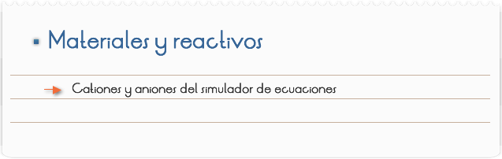
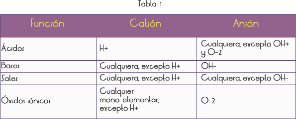
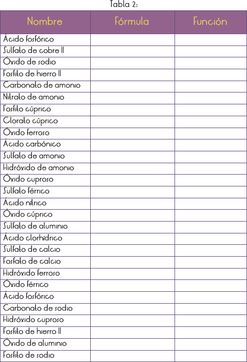
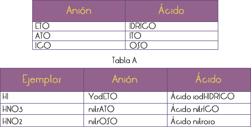
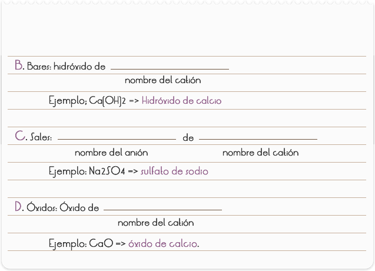

Objetivos
Elaborar las fórmulas de compuestos químicos inorgánicos (ácidos, bases, sales y óxidos)

Con el auxilio de la Tabla 1, montar la fórmula de los compuestos presentados en la Tabla 2, indicando a qué función pertenecen.

Cuestionario
1) Completa la Tabla 2.

RESULTADOS Y CONCLUSIONES
De las sustancias arriba estudiadas, los ácidos son covalentes (o moleculares) y, consecuentemente, no forman compuestos por iones. La ionización sólo ocurre cuando el ácido es agregado al agua.
Para llegar a la fórmula de los compuestos, se puede usar la regla general (posición de los iones y atomicidad)
El uso del simulador ayuda al alumno a comprender la necesidad de esos conceptos.
Se pueden denominar estos conceptos utilizando el simulador, siguiendo las reglas indicadas a continuación.
A. Ácidos: cambiar la terminación de los aniones de acuerdo con la Tabla A


El simulador también puede ser usado para enseñar al alumno a montar ecuaciones.
NOTA: El modelo del simulador de ecuaciones consta en el anexo del manual.